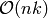
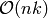

Build system¶
Elemental’s build system relies on CMake in order to manage a large number of configuration options in a platform-independent manner; it can be easily configured to build on Linux and Unix environments (including Darwin) as well as various versions of Microsoft Windows.
Elemental’s main dependencies are
- CMake (required)
- MPI (required)
- BLAS and LAPACK (required)
- PMRRR (required for eigensolvers)
- libFLAME (recommended for faster SVD’s)
Each of these dependencies is discussed in detail below.
Dependencies¶
CMake¶
Elemental uses several new CMake modules, so it is important to ensure that version 2.8.5 or later is installed. Thankfully the installation process is extremely straightforward: either download a platform-specific binary from the downloads page, or instead grab the most recent stable tarball and have CMake bootstrap itself. In the simplest case, the bootstrap process is as simple as running the following commands:
./bootstrap
make
make install
Note that recent versions of Ubuntu (e.g., version 12.04) have sufficiently up-to-date versions of CMake, and so the following command is sufficient for installation:
sudo apt-get install cmake
If you do install from source, there are two important issues to consider
By default, make install attempts a system-wide installation (e.g., into /usr/bin) and will likely require administrative privileges. A different installation folder may be specified with the --prefix option to the bootstrap script, e.g.,:
./bootstrap --prefix=/home/your_username make make install
Afterwards, it is a good idea to make sure that the environment variable PATH includes the bin subdirectory of the installation folder, e.g., /home/your_username/bin.
Some highly optimizing compilers will not correctly build CMake, but the GNU compilers nearly always work. You can specify which compilers to use by setting the environment variables CC and CXX to the full paths to your preferred C and C++ compilers before running the bootstrap script.
Basic usage¶
Though many configuration utilities, like autoconf, are designed such that the user need only invoke ./configure && make && make install from the top-level source directory, CMake targets out-of-source builds, which is to say that the build process occurs away from the source code. The out-of-source build approach is ideal for projects that offer several different build modes, as each version of the project can be built in a separate folder.
A common approach is to create a folder named build in the top-level of the source directory and to invoke CMake from within it:
mkdir build
cd build
cmake ..
The last line calls the command line version of CMake, cmake, and tells it that it should look in the parent directory for the configuration instructions, which should be in a file named CMakeLists.txt. Users that would prefer a graphical interface from the terminal (through curses) should instead use ccmake (on Unix platforms) or CMakeSetup (on Windows platforms). In addition, a GUI version is available through cmake-gui.
Though running make clean will remove all files generated from running make, it will not remove configuration files. Thus, the best approach for completely cleaning a build is to remove the entire build folder. On *nix machines, this is most easily accomplished with:
cd ..
rm -rf build
This is a better habit than simply running rm -rf * since, if accidentally run from the wrong directory, the former will most likely fail.
MPI¶
An implementation of the Message Passing Interface (MPI) is required for building Elemental. The two most commonly used implementations are
If your cluster uses InfiniBand as its interconnect, you may want to look into MVAPICH2.
Each of the respective websites contains installation instructions, but, on recent versions of Ubuntu (such as version 12.04), MPICH2 can be installed with
sudo apt-get install libmpich2-dev
and OpenMPI can be installed with
sudo apt-get install libopenmpi-dev
BLAS and LAPACK¶
The Basic Linear Algebra Subprograms (BLAS) and Linear Algebra PACKage (LAPACK) are both used heavily within Elemental. On most installations of Ubuntu, the following command should suffice for their installation:
sudo apt-get install libatlas-dev liblapack-dev
The reference implementation of LAPACK can be found at
and the reference implementation of BLAS can be found at
However, it is better to install an optimized version of these libraries, especialy for the BLAS. The most commonly used open source versions are ATLAS and OpenBLAS.
PMRRR¶
PMRRR is a parallel implementation of the MRRR algorithm introduced by
Inderjit Dhillon and
Beresford Parlett for computing
 eigenvectors of a tridiagonal matrix of size
eigenvectors of a tridiagonal matrix of size  in
 time. PMRRR was written by
Matthias Petschow and
Paolo Bientinesi and is
available at:
in
 time. PMRRR was written by
Matthias Petschow and
Paolo Bientinesi and is
available at:
Elemental builds a copy of PMRRR by default whenever possible: if an up-to-date non-MKL version of LAPACK is used, then PMRRR only requires a working MPI C compiler, otherwise, a Fortran 90 compiler is needed in order to build several recent LAPACK functions. If these LAPACK routines cannot be made available, then PMRRR is not built and Elemental’s eigensolvers are automatically disabled.
libFLAME¶
libFLAME is an open source library made available as part of the FLAME project. Its stated objective is to
...transform the development of dense linear algebra libraries from an art reserved for experts to a science that can be understood by novice and expert alike.
Elemental’s current implementation of parallel SVD is dependent upon a serial kernel for the bidiagonal SVD. A high-performance implementation of this kernel was recently introduced in “Restructuring the QR Algorithm for Performance”, by Field G. van Zee, Robert A. van de Geijn, and Gregorio Quintana-Orti. It can be found at
Installation of libFLAME is fairly straightforward. It is recommended that you download the latest nightly snapshot from
and then installation should simply be a matter of running:
./configure
make
make install
Getting Elemental’s source¶
There are two basic approaches:
Download a tarball of the most recent version from http://code.google.com/p/elemental/downloads/list. A new version is released roughly once a month, on average.
Install Mercurial and check out a copy of the repository by running
hg clone https://elemental.googlecode.com/hg elemental
Building Elemental¶
On *nix machines with BLAS, LAPACK, and MPI installed in standard locations, building Elemental can be as simple as:
cd elemental
mkdir build
cd build
cmake ..
make
make install
As with the installation of CMake, the default install location is system-wide, e.g., /usr/local. The installation directory can be changed at any time by running:
cmake -D CMAKE_INSTALL_PREFIX=/your/desired/install/path ..
make install
Though the above instructions will work on many systems, it is common to need to manually specify several build options, especially when multiple versions of libraries or several different compilers are available on your system. For instance, any C++, C, or Fortran compiler can respectively be set with the CMAKE_CXX_COMPILER, CMAKE_C_COMPILER, and CMAKE_Fortran_COMPILER variables, e.g.,
cmake -D CMAKE_CXX_COMPILER=/usr/bin/g++ \
-D CMAKE_C_COMPILER=/usr/bin/gcc \
-D CMAKE_Fortran_COMPILER=/usr/bin/gfortran ..
It is also common to need to specify which libraries need to be linked in order to provide serial BLAS and LAPACK routines (and, if SVD is important, libFLAME). The MATH_LIBS variable was introduced for this purpose and an example usage for configuring with BLAS and LAPACK libraries in /usr/lib would be
cmake -D MATH_LIBS="-L/usr/lib -llapack -lblas -lm" ..
It is important to ensure that if library A depends upon library B, A should be specified to the left of B; in this case, LAPACK depends upon BLAS, so -llapack is specified to the left of -lblas.
If libFLAME is available at /path/to/libflame.a, then the above link line should be changed to
cmake -D MATH_LIBS="/path/to/libflame.a;-L/usr/lib -llapack -lblas -lm" ..
Elemental’s performance in Singular Value Decompositions (SVD’s) is greatly improved on many architectures when libFLAME is linked.
Build Modes¶
Elemental currently has four different build modes:
- PureDebug - An MPI-only build that maintains a call stack and provides more error checking.
- PureRelease - An optimized MPI-only build suitable for production use.
- HybridDebug - An MPI+OpenMP build that maintains a call stack and provides more error checking.
- HybridRelease - An optimized MPI+OpenMP build suitable for production use.
The build mode can be specified with the CMAKE_BUILD_TYPE option, e.g., -D CMAKE_BUILD_TYPE=PureDebug. If this option is not specified, Elemental defaults to the PureRelease build mode.
Testing the installation¶
Once the library has been built, it is a good idea to verify that it is functioning properly. The following is a simple example that constructs of a distributed matrix, sets it to the identity matrix, then prints it:
#include "elemental.hpp" using namespace elem; void Usage() { std::cout << "Identity <n>\n" << " n: size of identity matrix to build\n" << std::endl; } int main( int argc, char* argv[] ) { Initialize( argc, argv ); mpi::Comm comm = mpi::COMM_WORLD; const int commRank = mpi::CommRank( comm ); const int commSize = mpi::CommSize( comm ); if( argc < 2 ) { if( commRank == 0 ) Usage(); Finalize(); return 0; } const int n = atoi( argv[1] ); DistMatrix<double> I( n, n ); MakeIdentity( I ); I.Print("Identity"); Finalize(); return 0; }
As you can see, the only required header is elemental.hpp, which must be in the include path when compiling this simple driver, say Identity.cpp. If Elemental was installed in /usr/local, then /usr/local/conf/elemvariables can be used to build a simple Makefile:
include /usr/local/conf/elemvariables
Identity: Identity.cpp
${CXX} ${ELEM_COMPILE_FLAGS} $< -o $@ ${ELEM_LINK_FLAGS} ${ELEM_LIBS}
As long as Identity.cpp and this Makefile are in the current directory, simply typing make should build the driver. A slightly modified version of the above driver is available in examples/special_matrices/Identity.cpp.
The executable can then typically be run with a single process using
./Identity 8
and the output should be
Creating a matrix distributed over 1 process.
Identity
1 0 0 0 0 0 0 0
0 1 0 0 0 0 0 0
0 0 1 0 0 0 0 0
0 0 0 1 0 0 0 0
0 0 0 0 1 0 0 0
0 0 0 0 0 1 0 0
0 0 0 0 0 0 1 0
0 0 0 0 0 0 0 1
The driver can be run with several processes using the MPI launcher provided by your MPI implementation; a typical way to run the Identity driver on eight processes would be:
mpirun -np 8 ./Identity 8
Only the first line of the output should change with respect to when run on a single process.
Elemental as a subproject¶
Building your project, say Foo, with Elemental as a dependency is reasonably straightforward: simply put an entire copy of the Elemental source tree in a subdirectory of your main project folder, say external/elemental, and uncomment out the bottom section of Elemental’s CMakeLists.txt, i.e., change
################################################################################
# Uncomment if including Elemental as a subproject in another build system #
################################################################################
#set(LIBRARY_TYPE ${LIBRARY_TYPE} PARENT_SCOPE)
#set(MPI_C_COMPILER ${MPI_C_COMPILER} PARENT_SCOPE)
#set(MPI_C_INCLUDE_PATH ${MPI_C_INCLUDE_PATH} PARENT_SCOPE)
#set(MPI_C_COMPILE_FLAGS ${MPI_C_COMPILE_FLAGS} PARENT_SCOPE)
#set(MPI_C_LINK_FLAGS ${MPI_C_LINK_FLAGS} PARENT_SCOPE)
#set(MPI_C_LIBRARIES ${MPI_C_LIBRARIES} PARENT_SCOPE)
#set(MPI_CXX_COMPILER ${MPI_CXX_COMPILER} PARENT_SCOPE)
#set(MPI_CXX_INCLUDE_PATH ${MPI_CXX_INCLUDE_PATH} PARENT_SCOPE)
#set(MPI_CXX_COMPILE_FLAGS ${MPI_CXX_COMPILE_FLAGS} PARENT_SCOPE)
#set(MPI_CXX_LINK_FLAGS ${MPI_CXX_LINK_FLAGS} PARENT_SCOPE)
#set(MPI_CXX_LIBRARIES ${MPI_CXX_LIBRARIES} PARENT_SCOPE)
#set(MATH_LIBS ${MATH_LIBS} PARENT_SCOPE)
#set(RESTRICT ${RESTRICT} PARENT_SCOPE)
#set(RELEASE ${RELEASE} PARENT_SCOPE)
#set(BLAS_POST ${BLAS_POST} PARENT_SCOPE)
#set(LAPACK_POST ${LAPACK_POST} PARENT_SCOPE)
#set(HAVE_F90_INTERFACE ${HAVE_F90_INTERFACE} PARENT_SCOPE)
#set(WITHOUT_PMRRR ${WITHOUT_PMRRR} PARENT_SCOPE)
#set(AVOID_COMPLEX_MPI ${AVOID_COMPLEX_MPI} PARENT_SCOPE)
#set(HAVE_REDUCE_SCATTER_BLOCK ${HAVE_REDUCE_SCATTER_BLOCK} PARENT_SCOPE)
#set(REDUCE_SCATTER_BLOCK_VIA_ALLREDUCE ${REDUCE_SCATTER_BLOCK_VIA_ALLREDUCE} PARENT_SCOPE)
#set(USE_BYTE_ALLGATHERS ${USE_BYTE_ALLGATHERS} PARENT_SCOPE)
to
################################################################################
# Uncomment if including Elemental as a subproject in another build system #
################################################################################
set(MPI_C_COMPILER ${MPI_C_COMPILER} PARENT_SCOPE)
set(MPI_C_INCLUDE_PATH ${MPI_C_INCLUDE_PATH} PARENT_SCOPE)
set(MPI_C_COMPILE_FLAGS ${MPI_C_COMPILE_FLAGS} PARENT_SCOPE)
set(MPI_C_LINK_FLAGS ${MPI_C_LINK_FLAGS} PARENT_SCOPE)
set(MPI_C_LIBRARIES ${MPI_C_LIBRARIES} PARENT_SCOPE)
set(MPI_CXX_COMPILER ${MPI_CXX_COMPILER} PARENT_SCOPE)
set(MPI_CXX_INCLUDE_PATH ${MPI_CXX_INCLUDE_PATH} PARENT_SCOPE)
set(MPI_CXX_COMPILE_FLAGS ${MPI_CXX_COMPILE_FLAGS} PARENT_SCOPE)
set(MPI_CXX_LINK_FLAGS ${MPI_CXX_LINK_FLAGS} PARENT_SCOPE)
set(MPI_CXX_LIBRARIES ${MPI_CXX_LIBRARIES} PARENT_SCOPE)
set(MATH_LIBS ${MATH_LIBS} PARENT_SCOPE)
set(RESTRICT ${RESTRICT} PARENT_SCOPE)
set(RELEASE ${RELEASE} PARENT_SCOPE)
set(BLAS_POST ${BLAS_POST} PARENT_SCOPE)
set(LAPACK_POST ${LAPACK_POST} PARENT_SCOPE)
set(HAVE_F90_INTERFACE ${HAVE_F90_INTERFACE} PARENT_SCOPE)
set(WITHOUT_PMRRR ${WITHOUT_PMRRR} PARENT_SCOPE)
set(AVOID_COMPLEX_MPI ${AVOID_COMPLEX_MPI} PARENT_SCOPE)
set(HAVE_REDUCE_SCATTER_BLOCK ${HAVE_REDUCE_SCATTER_BLOCK} PARENT_SCOPE)
set(REDUCE_SCATTER_BLOCK_VIA_ALLREDUCE ${REDUCE_SCATTER_BLOCK_VIA_ALLREDUCE} PARENT_SCOPE)
set(USE_BYTE_ALLGATHERS ${USE_BYTE_ALLGATHERS} PARENT_SCOPE)
Afterwards, create a CMakeLists.txt in your main project folder that builds off of the following snippet:
cmake_minimum_required(VERSION 2.8.5)
project(Foo)
add_subdirectory(external/elemental)
include_directories("${PROJECT_BINARY_DIR}/external/elemental/include")
include_directories(${MPI_CXX_INCLUDE_PATH})
# Build your project here
# e.g.,
# add_library(foo STATIC ${FOO_SRC})
# target_link_libraries(foo elemental)
Troubleshooting¶
If you run into build problems, please email jack.poulson@gmail.com and make sure to attach the file include/elemental/config.h that should be generated within your build directory. Please only direct general usage questions to elemental-dev@googlegroups.com.